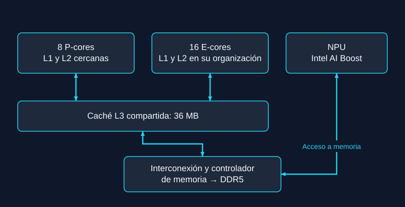
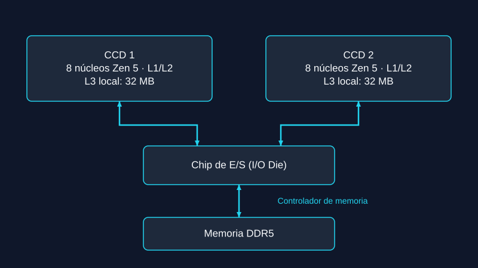
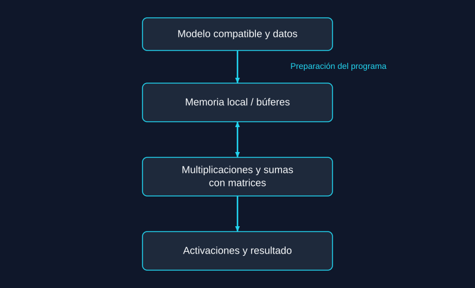
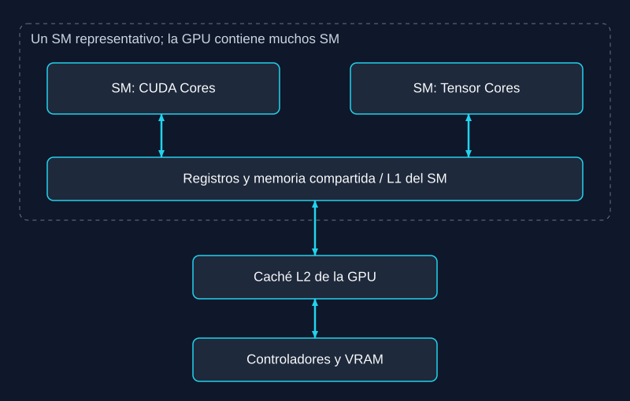

Parte 1: El Corazón Inteligente de la Máquina
1.1. Comparación de CPU: Intel Core Ultra 9 285K vs AMD Ryzen 9 9950X
Comparo el Intel Core Ultra 9 285K y el AMD Ryzen 9 9950X. Son modelos de gama alta de su generación. Mi objetivo es entender sus diferencias, no afirmar que uno es mejor en todas las tareas. Para investigar IA también importan la GPU, la RAM y el programa que utilizamos.[1], [2]

| Característica | Intel Core Ultra 9 285K[1] | AMD Ryzen 9 9950X[2] |
|---|---|---|
| Arquitectura | Arrow Lake S; 8 P-cores y 16 E-cores | Zen 5; dos CCD de cómputo y un chip de entrada y salida |
| Núcleos e hilos | 24 núcleos y 24 hilos; sin Hyper-Threading | 16 núcleos y 32 hilos; SMT |
| Caché L3 | 36 MB | 64 MB en total, distribuidos entre los CCD |
| NPU | Intel AI Boost; hasta 13 TOPS INT8 | Este modelo no integra una NPU |
| Interpretación | Combina dos tipos de núcleo y una unidad de IA dedicada | Ofrece dos hilos por núcleo y una arquitectura de chiplets |
Qué significan estos datos
Un núcleo ejecuta instrucciones. Un hilo es una secuencia de trabajo que el procesador puede gestionar. Los P-cores de Intel priorizan el rendimiento por núcleo; los E-cores buscan un uso eficiente del espacio y de la energía. Esto no significa que los E-cores solo hagan tareas pequeñas. El sistema operativo distribuye el trabajo según la carga.
El Ryzen usa SMT: cada núcleo puede gestionar dos hilos. Esto puede mejorar el uso de sus recursos, pero no duplica siempre el rendimiento. Tampoco permite calcular directamente cuántas máquinas virtuales funcionan bien. Esa cantidad depende de la RAM, los programas y los recursos asignados.
La caché es una memoria pequeña y rápida dentro del procesador. L1 está cerca de las unidades de ejecución; L2 guarda más datos; L3 ayuda a compartir o reutilizar información. Tener más caché puede reducir algunos accesos a RAM. Sin embargo, la caché no sustituye la VRAM de la GPU ni permite cargar por sí sola un modelo grande.
En el 9950X los núcleos están repartidos entre dos chiplets de cómputo. Por eso, sus 64 MB de L3 no deben dibujarse como una única memoria igual de cercana a todos los núcleos. En el 285K también hay varios bloques físicos conectados dentro del encapsulado. Las fotos comerciales no muestran estas relaciones.
Virtualización y aislamiento
La virtualización permite crear entornos de trabajo separados. Sin embargo, más hilos no significan más aislamiento. AMD indica que SEV es una tecnología de sus procesadores EPYC y que no está disponible en Ryzen. Por eso no uso SEV como argumento a favor del Ryzen 9 9950X. Para evaluar el aislamiento hay que revisar el sistema operativo, el hipervisor, los permisos y la configuración.[3]


Esquema simplificado del Intel Core Ultra 9 285K. No representa el diseño físico exacto.[1]


Esquema simplificado del AMD Ryzen 9 9950X. Los 64 MB de L3 están distribuidos entre dos CCD, no son una única memoria.[2]
1.2. La NPU y sus límites
Una NPU es una unidad especializada en operaciones de redes neuronales. Estas redes usan muchas multiplicaciones y sumas con matrices. La NPU dispone de recursos dedicados para estas operaciones y utiliza memoria cercana para reducir movimientos de datos. El programa debe convertir o preparar el modelo para un formato compatible.
Intel declara hasta 13 TOPS INT8 para la NPU del 285K. TOPS indica operaciones por segundo bajo condiciones concretas; no es una medida directa de tokens por segundo. La precisión, el tamaño del modelo, la memoria y el soporte del programa también influyen. Por eso, 13 TOPS no demuestran que todos los LLM sean imposibles en una NPU.[1]
Windows Studio Effects es un ejemplo de aplicación de IA que puede utilizar una NPU. Intel declara soporte en el 285K, pero la disponibilidad de los efectos depende también de Windows, los controladores y la configuración del fabricante. No todos los efectos están disponibles en todos los equipos.[1], [12]


Esquema simplificado de una NPU. No representa el diseño físico exacto de Intel.[1]
1.3. La GPU para el cálculo paralelo
| Característica | NVIDIA RTX 4090[4] | AMD RX 7900 XTX[5] |
|---|---|---|
| VRAM | 24 GB GDDR6X | 24 GB GDDR6 |
| Ancho de banda de memoria | 1008 GB/s | 960 GB/s |
| Software | CUDA y herramientas compatibles | ROCm y herramientas compatibles |
| Criterio de elección | Verificar programa, versión y sistema operativo | Verificar programa, versión y sistema operativo |
La RTX 4090 utiliza la arquitectura Ada Lovelace. Sus bloques de procesamiento incluyen núcleos CUDA y Tensor Cores de cuarta generación. Los Tensor Cores aceleran operaciones matriciales con formatos admitidos por el hardware y el software. No equivalen a núcleos de CPU. Los RT Cores tienen otra función principal: acelerar el trazado de rayos.[4]
Las dos tarjetas tienen 24 GB de memoria, pero usan ecosistemas diferentes. CUDA puede facilitar el uso de muchas herramientas de IA. Aun así, AMD también dispone de ROCm y existen implementaciones compatibles de vLLM y FlashAttention. La compatibilidad debe comprobarse para cada combinación de GPU, sistema y versión. No es correcto afirmar que AMD siempre necesita compilación manual o que NVIDIA es obligatoria para toda investigación.[6], [7]
Para estimar la memoria mínima de los pesos, multiplico el número de parámetros por los bits usados y divido entre ocho. Un modelo de 70 mil millones de parámetros necesita aproximadamente 35 GB a 4 bits, 70 GB a 8 bits o 140 GB a 16 bits. Son GB decimales y solo incluyen los pesos. El programa necesita memoria adicional para otras estructuras y para el contexto.
Por eso una RTX 4090 de 24 GB no puede guardar completamente los pesos de un modelo denso de 70B a 4 bits. Una RTX 6000 Ada de 48 GB ofrece más margen para una versión cuantizada, pero no para 70B a 16 bits. Algunos programas, como llama.cpp, permiten repartir el trabajo entre CPU y GPU. Esto amplía las posibilidades, aunque puede reducir la velocidad.[8], [20]


Esquema funcional de NVIDIA Ada. Las unidades dibujadas pertenecen a un SM representativo; cada SM tiene sus propios recursos. La caché L2 y la VRAM se muestran a escala de GPU. No describe la arquitectura AMD ni el diseño físico exacto.[4]
1.4. Qué muestran las pruebas publicadas
Prueba de Puget Systems de 2023
| Prueba | RTX 4090[9] | RX 7900 XTX[9] |
|---|---|---|
| Stable Diffusion con Automatic1111 | 21,04 iteraciones/s | 4,67 iteraciones/s |
| Stable Diffusion con SHARK | 15,24 iteraciones/s | 20,76 iteraciones/s |
Estos resultados históricos muestran que el programa cambia mucho el resultado. Automatic1111 y SHARK usaron configuraciones y versiones de modelos diferentes. No debemos comparar sus filas como si fueran una sola prueba. Tampoco representan el rendimiento actual de todos los LLM. La conclusión útil es que hay que elegir y probar el software, además de comparar el hardware.[9]
Entrenamiento en GPU: un ejemplo publicado
Entrenar significa calcular una predicción, medir el error, calcular gradientes y actualizar los pesos. En inferencia utilizo los pesos ya preparados para producir una respuesta. Por eso sus requisitos de memoria y sus métricas son diferentes. [45]
Lambda publicó en 2022 una comparación de RTX 3090 y RTX 4090, actualizada en 2023, con el contenedor PyTorch NGC 22.09-py3. Para ResNet50, la tabla informa estos valores de rendimiento de entrenamiento. Presento el cociente dentro de cada precisión; no convierto estos datos en tokens por segundo. [44]
| Precisión | RTX 3090 (base) | RTX 4090 / RTX 3090 |
|---|---|---|
| TF32 | 1,00× | 224 / 144 ≈ 1,56× |
| FP16 | 1,00× | 379 / 236 ≈ 1,61× |
El resultado apoya el uso de GPU para esta tarea de entrenamiento. No prueba una ventaja igual en todos los modelos. Tampoco es una comparación directa con la NPU de NITRO: cambian el modelo, la tarea y la métrica. La RTX 3090 aparece solo como referencia del estudio publicado.
Estudio NITRO de 2024
El estudio NITRO de 2024 probó inferencia en una NPU de una plataforma Intel Meteor Lake. Para Llama 3.2 de 3B, informó 267,2 ms por token en CPU y 156,1 ms en NPU. Un valor menor indica menos tiempo. El estudio usó OpenVINO 2024.4 y una configuración específica; no es una medición del 285K. Además, una mejora de tiempo no demuestra por sí sola una mejora de energía. Para esto hay que medir también el consumo.[10]
Resumen de tareas y limitaciones
| Tarea | Elección razonada | Límite de la conclusión |
|---|---|---|
| Entrenar o ajustar una red | Una GPU compatible ofrece paralelismo y herramientas para calcular gradientes | La memoria y el tamaño del modelo pueden impedir un entrenamiento completo |
| Inferencia continua de un modelo compatible | Una NPU puede descargar trabajo de CPU y GPU | Comparar latencia, precisión y energía con el mismo modelo |
| Preparar datos y coordinar programas | La CPU sigue siendo necesaria | Más núcleos no aceleran todas las tareas por igual |
1.5. Aplicaciones reales
Ejemplos concretos de cómo se utilizan los diferentes aceleradores en tareas de IA. Cada aplicación requiere una configuración específica y sus resultados dependen del hardware, el software y la versión utilizados.

Stable Diffusion y GPU
Stable Diffusion genera imágenes a partir de instrucciones. Esta tarea utiliza muchas operaciones paralelas y puede ejecutarse en una GPU compatible. La comparación de Puget Systems muestra que el programa influye en el resultado. Sus pruebas corresponden a generación de imágenes, no al entrenamiento del modelo. [9] [46]

Windows Studio Effects y NPU
Los efectos de cámara (desenfoque de fondo, encuadre automático) son un ejemplo de inferencia continua en un equipo compatible. Intel declara soporte en el 285K, pero la disponibilidad depende del dispositivo, los controladores y la configuración del fabricante. No todos los efectos están disponibles en todos los equipos.[1], [12]

CPU y GPU: Ollama o LM Studio
Ollama y LM Studio permiten trabajar con modelos locales. La CPU puede ejecutar inferencia; una GPU compatible puede acelerar parte del trabajo. La RAM sigue siendo necesaria. Para trabajar sin conexión debo descargar antes los archivos y evitar funciones que usen servicios remotos. [8] [13] [14]
garak y evaluación de modelos
Esta herramienta ejecuta pruebas para buscar determinados fallos en modelos de lenguaje. Sus resultados ayudan a comparar modelos, pero necesitan revisión humana. Los contenedores Docker pueden organizar el entorno; no equivalen a una máquina virtual ni eliminan todos los riesgos.[11], [15]
vLLM y servicio de modelos
vLLM es un motor de inferencia y servicio de modelos. Su documentación incluye distintas plataformas, entre ellas GPU NVIDIA, GPU AMD compatibles y CPU. Por eso CUDA no es un requisito universal. Debo comprobar la combinación de hardware, versión, sistema y modelo antes de elegirlo. [43]
Docker y aislamiento de entornos
Docker permite crear contenedores aislados para ejecutar modelos y pruebas en entornos controlados. Esto es útil para reproducir experimentos y organizar dependencias. Los contenedores comparten el kernel del sistema operativo; no son máquinas virtuales completas y no eliminan todos los riesgos de seguridad.[15]